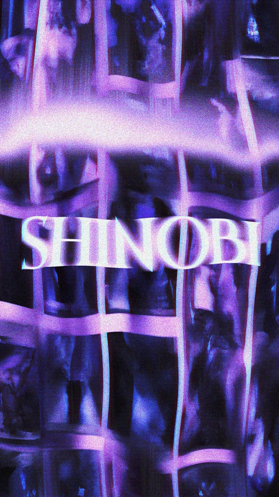
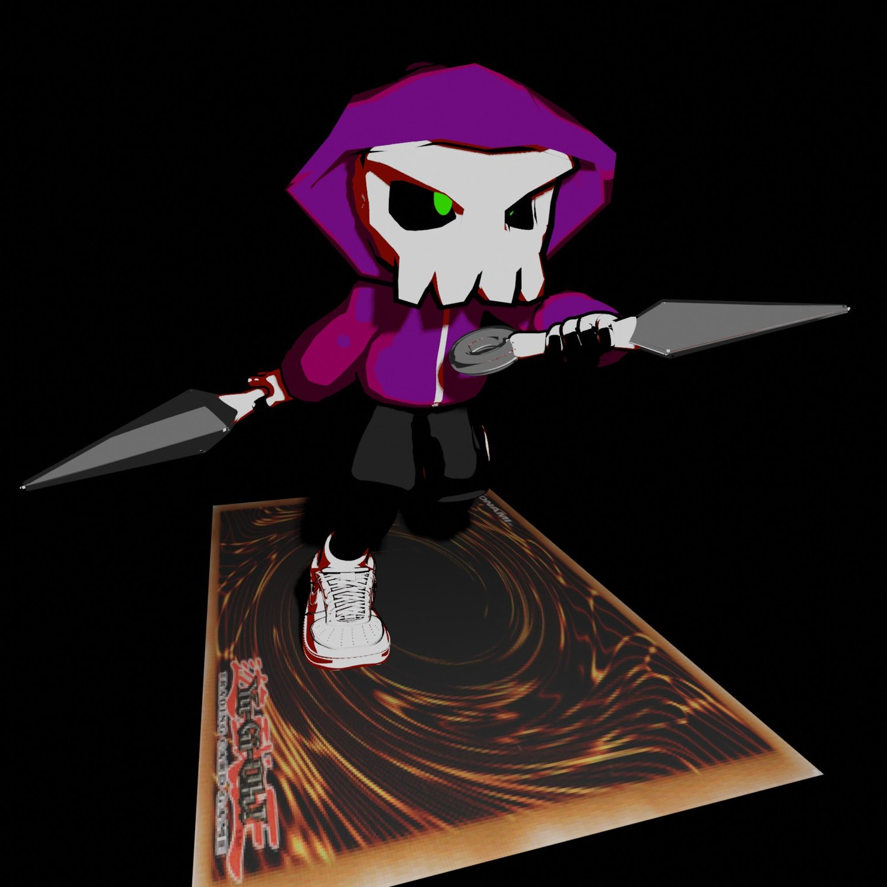
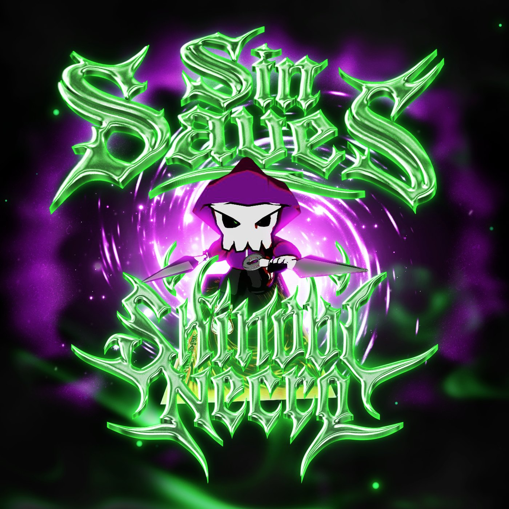
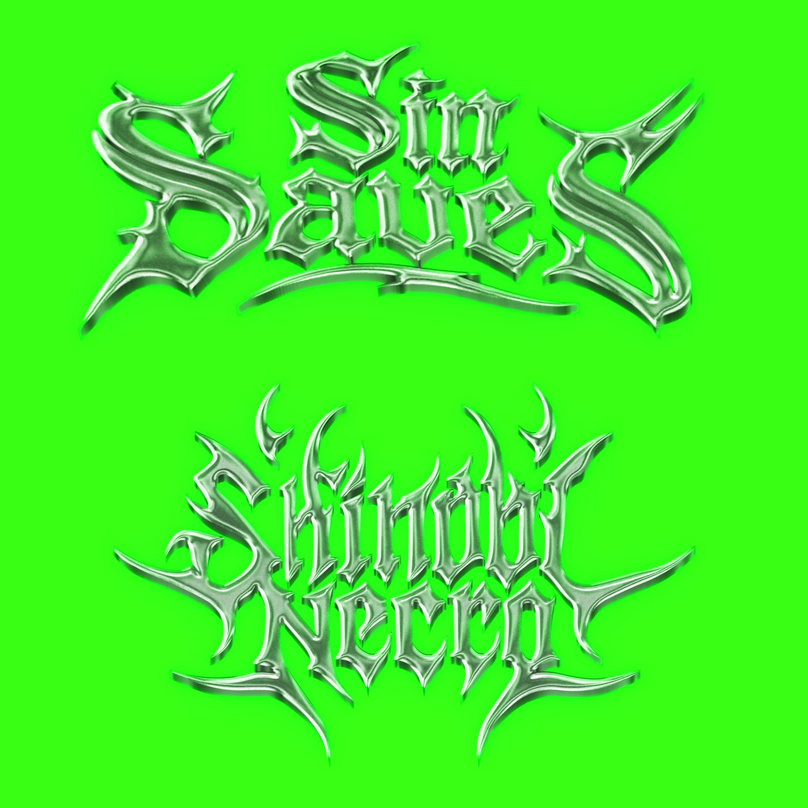
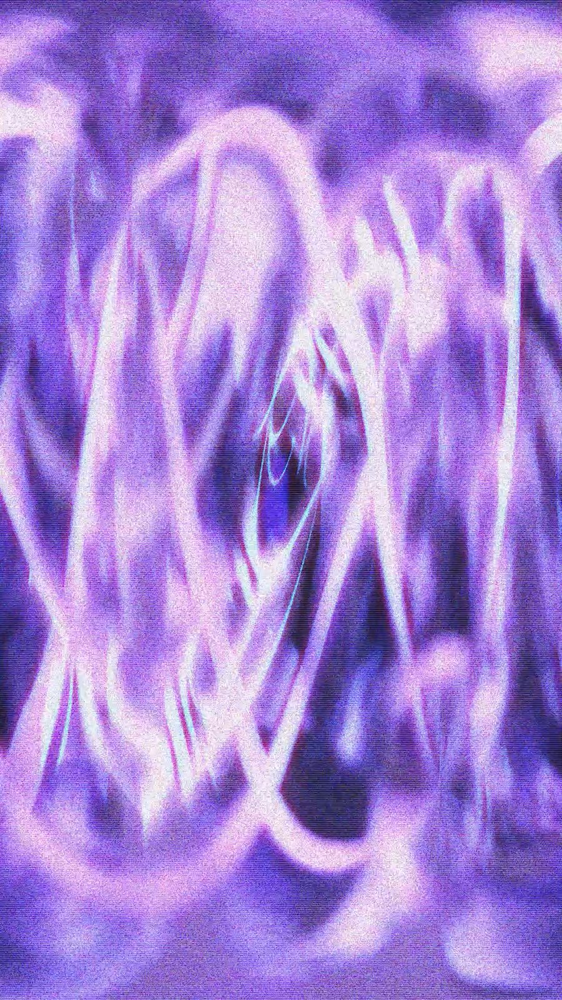
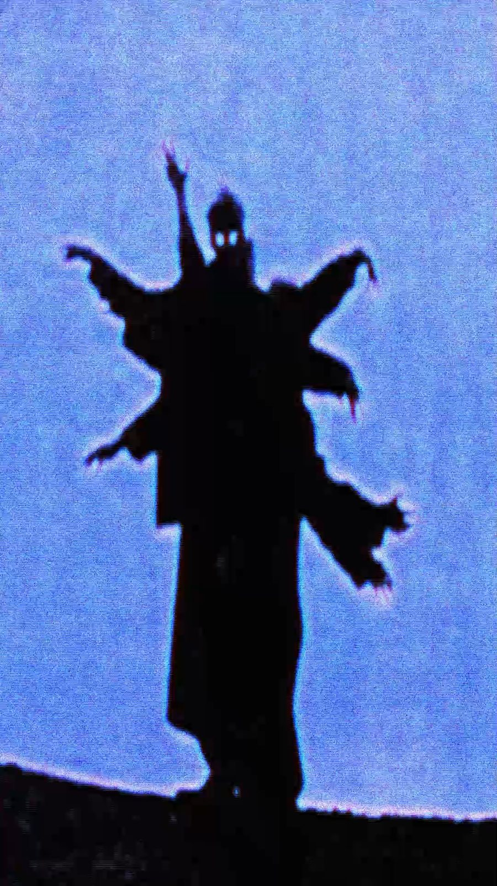

A HACKING PARADISE project
audiovisual · green-and-purple glitch · chrome
The motif
The project lives in a single move: a figure crossing from shinobi to necro, the living blade to the dead one. Scroll the frame and the two states trade places.


A static crossfade if motion is reduced. Otherwise the transformation tracks your scroll.
What it is
Shinobi Necro is part of the body of work HACKING PARADISE has had hands on. An audiovisual identity built on tour-poster energy: glitched green-and-purple fields, chrome lettering, a black rose, and katakana. Shown as collective output, not split by credit.
01
The audio side of the project, built to sit inside the same dark, glitched world the visuals live in.
02
Cover art, poster layouts, and the green-and-purple chrome look that ties the release together.
03
The shinobi-to-necro transformation as the central motif, carried from poster to screen.
The lettering


The fields


Shinobi Necro is one of the projects HACKING PARADISE had hands on. See the rest of the work and the members behind it.
Back to HACKING PARADISE